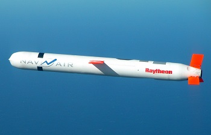
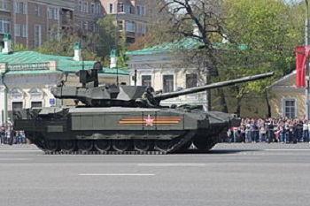
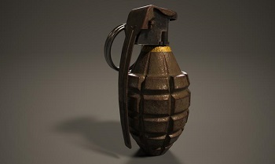
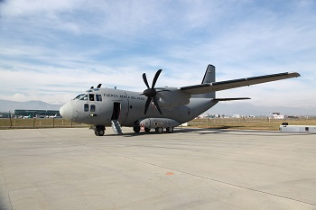
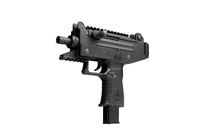
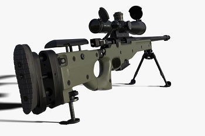
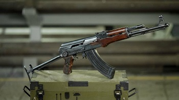
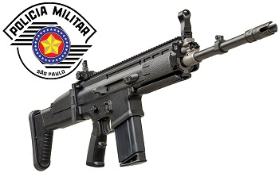
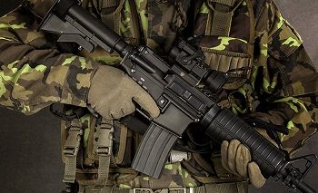
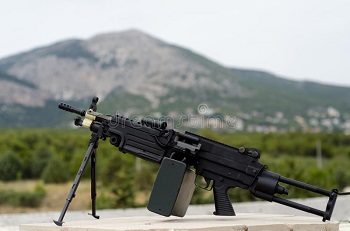

| Código | Descrição | Preço | Foto | Vídeo |
|---|---|---|---|---|
| 0001 | Míssil TomahawkOs mísseis podem alcançar alvos a até 1,6 mil quilômetros de distância. Desenhados para voar a baixas altitudes, chegam à velocidade de 885 km/h – ou seja, conseguem atingir a distância máxima em até 2 horas. |
$1.000.000 |  | |
| 0002 | Tanque de GuerraUm carro de combate é um sistema de armas que reúne em si, sob determinada prioridade sistémica, as 5 acções essenciais ao combate: Poder de fogo, Ação de Choque, Protecção, Mobilidade, e Informações e Comunicações. Possui com elemento do subsistema mobilidade, a esteira através do qual se desloca. |
$78.000 |  | |
| 0003 | Granada ComumEm granadas de ativação manual, o acionamento só pode ser iniciado após a remoção do pino de segurança. Ele funciona como uma trava que impede a retirada da alavanca. |
$1 |  | |
| 0004 | Avião MilitarA aviação militar, mais correctamente aeronáutica militar, é a área da aviação que é usada para fins exclusivamente militares, com o intuito de se realizar guerra aérea para fins ofensivos ou defensivos, incluindo a capacidade de transporte aéreo. |
$13.100.000 |  | |
| 0005 | Mini UziA Uzi é uma família de pistolas-metralhadoras compactas israelenses operadas por recuo de gases e ferrolho aberto. |
$500 |  | |
| 0006 | FuzilO fuzil de precisão AW L96A1, o G22 Gewehr Scharfschützengewehren, criado por um convênio britânico e alemão, é o melhor fuzil de precisão do mundo. Tem alcance efetivo de mais de 2 km, com seus diversos calibres como o 5,56 mmX45 (. 223), 7,62 mmX51 (. 308), . |
$2.500 |  | |
| 0007 | AK-47O AK-47, ou AK como é oficialmente conhecida, também conhecida como Kalashnikov, é um fuzil de assalto de calibre 7,62x39mm criado em 1947 por Mikhail Kalashnikov e produzido na União Soviética pela indústria estatal IZH. |
$8.000 |  | |
| 0008 | SCARO FN SCAR é um fuzil de autocarregamento a gás com um ferrolho rotativo. |
$3.000 |  | |
| 0009 | M4A carabina M4 é uma variante mais curta e mais leve do rifle M16A2. A M4 é uma carabina alimentada com um carregador de 30 munições no calibre 5,56×45mm NATO, ela é operada à gás por impacto direto é refrigerada a ar é Tem um cano de 14,5 in e uma soleira telescópica. |
$2.000 |  | |
| 0010 | M249M249 é a designação de uma metralhadora leve padrão do Exército Americano, criada no fim da década de 1970. Esta arma também é usada pelo Corpo de Fuzileiros Navais do Brasil convencionada pelo nome de "minimi", em suas unidades infantaria. E sua versão "PARA" é utilizada por elementos de operações especiais. |
$5.200 |  |